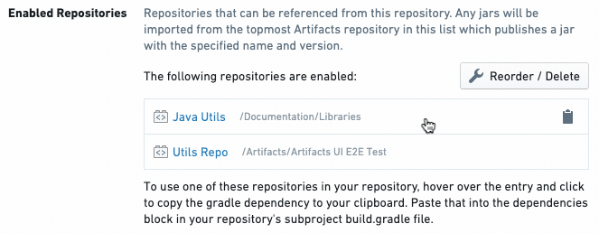

This section covers the basic workflow for sharing Java code between repositories.
Before reading on, make sure you have created a separate repository containing the Java code / macros which you will depend on in other repositories. Throughout this guide, we will refer to this repository containing the Java code / macros to be shared as the shared code repository, and we will refer to any repository that depends on the shared code repository as a dependent repository.
After adding Java code / macros to your shared code repository, make sure to compile the repository by committing your changes.
In order to share code, you must ensure that the dependent repository has access to the artifact produced by the shared code repository. To configure the artifacts that can be referenced from the dependent repository, navigate to the Artifacts section of the Settings tab. Learn more about artifact settings.
:::callout{theme="neutral"} The Gradle setup for the dependent repository is required any time you are sharing code across repositories (this includes Java code as well as macros). :::
Jemma automatically publishes the artifact produced by the shared code repository. Thus, after setting up the required permissions mentioned above, all the dependent repository needs to do is point to the published artifact. That will involve adding a block like the following to the end of the build.gradle file in the language-specific subproject of the dependent repository:
dependencies {
compile '<SHARED_CODE_REPO_RID>:<SHARED_CODE_REPO_GRADLE_SUBPROJECT>:<SHARED_CODE_REPO_VERSION>'
}
Step through the process for getting the required information and adding it to the build.gradle file.
First, you need the SHARED_CODE_REPO_RID, that is, the RID of the shared code repository. You can obtain this from the repo URL. Alternatively, you can click on a repository entry on the Artifacts Settings tab to copy the above compile line with the shared repository RID filled in (such as compile 'ri.stemma.repository.some-random-rid:<SHARED_CODE_REPO_GRADLE_SUBPROJECT>:<SHARED_CODE_REPO_VERSION>') to your clipboard.
\

Next, you need to obtain values for SHARED_CODE_REPO_GRADLE_SUBPROJECT and SHARED_CODE_REPO_VERSION. To obtain these, modify the ci.yml file in the shared code repository by adding --info to the last line (starting with ./gradlew). For example:
./gradlew --no-daemon --build-cache --stacktrace patch publish
Becomes:
./gradlew --no-daemon --build-cache --stacktrace patch publish --info
Then, refer to the CI output for the latest Jemma job in the shared code repository. Look for a line in the CI output that matches one of the following forms:
Upload https://<MAVEN_REPO_URL>/maven-repository-proxy/authz/user-code/<SHARED_CODE_REPO_RID>/<SHARED_CODE_REPO_GRADLE_SUBPROJECT>/<SHARED_CODE_REPO_VERSION>/<SHARED_CODE_REPO_GRADLE_SUBPROJECT>-<SHARED_CODE_REPO_VERSION>.jar
or
Uploading: ri/stemma/main/repository/<SHARED_CODE_REPO_UUID>/<SHARED_CODE_REPO_GRADLE_SUBPROJECT>/<SHARED_CODE_REPO_VERSION>/<SHARED_CODE_REPO_GRADLE_SUBPROJECT>-<SHARED_CODE_REPO_VERSION>.jar to repository remote at https://<ARTIFACTS_URL>/artifacts/api/legacy/mrp/authz/user-code/
or
Uploading: ri/stemma/main/repository/<SHARED_CODE_REPO_UUID>/<SHARED_CODE_REPO_GRADLE_SUBPROJECT>/<SHARED_CODE_REPO_VERSION>/<SHARED_CODE_REPO_GRADLE_SUBPROJECT>-<SHARED_CODE_REPO_VERSION>.jar to repository remote at https://<ARTIFACTS_URL>/artifacts/api/repositories/<SHARED_CODE_REPO_UUID>/contents/release/maven/
Using the information from the CI output, you can construct the Maven coordinate referencing the artifact produced by your shared code repository. Note that the <SHARED_CODE_REPO_RID> you provide in your Maven coordinate should be of the form ri.stemma.main.repository.{RID_VALUE}.
build.gradle file. Make sure you edit the build.gradle file in the language-specific subproject folder (e.g. transforms-java/build.gradle), not the one at the root of the repository. Your updated build.gradle should look something like the following (note the two dependencies blocks):```gradle buildscript { // ... dependencies { classpath "com.palantir.transforms.java:lang-java-gradle-plugin:${transformsJavaVersion}" } }
apply plugin: 'com.palantir.transforms.lang.java' apply plugin: 'com.palantir.transforms.lang.java-defaults'
dependencies {
compile '
You should now be able to access code from the shared code repository in the dependent code repository!
:::callout{theme="warning" title="Warning"}
As you update the code in the shared code repository, you will need to update the <SHARED_CODE_REPO_VERSION> in your Maven coordinate to ensure that your dependent repository is using the most up-to-date version of the shared code. Each time you compile the shared code repository, check the CI output to find the updated version number you should be referencing.
:::
Now, you are ready to start sharing code across repositories. For any dependent repository that needs to reference code from the shared code repository, make sure you have taken the steps mentioned above to set up the correct permissions and dependencies.
:::callout{theme="neutral"} Unlike with Python, Code Repositories does not support the creation of Java libraries, only the sharing of Java repositories. This means features such as tagging are also unsupported for Java. :::